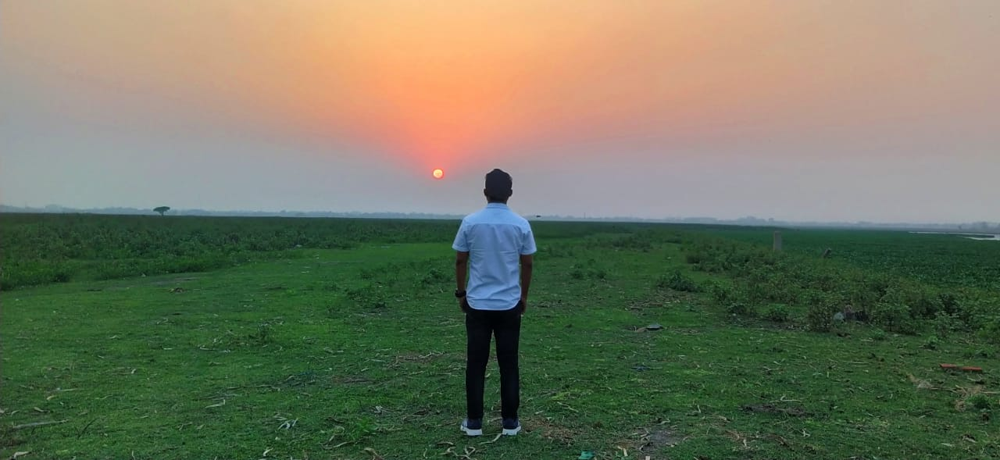

Photos

Videos
Vlogs
About
Nihal Doley is a Assamese Singer, Songwritter, Composer from North Lakhimpur, Assam, who belongs to Mising Community.
He can sing in multiple languages, including Mising, Assamese, Hindi, Bangla.
He is also a Biomedical Engineer and completed his B.Tech from North Eastern Hill University.